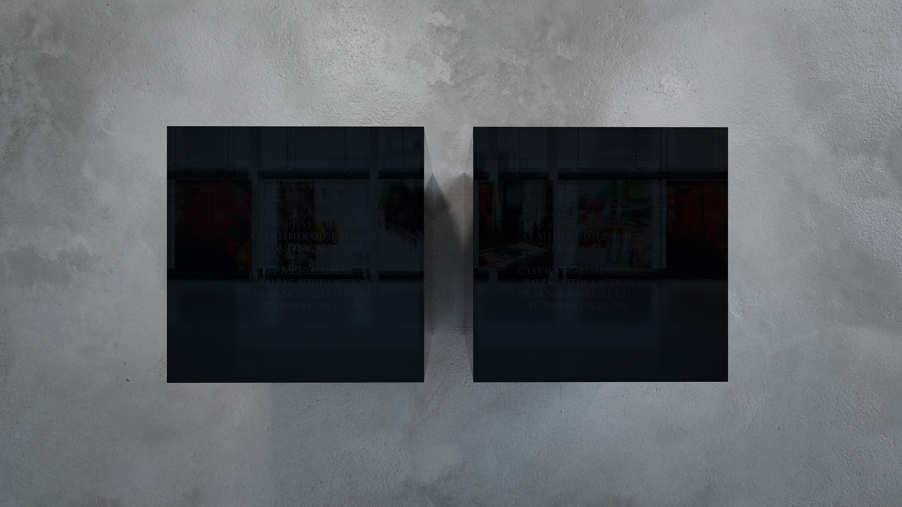
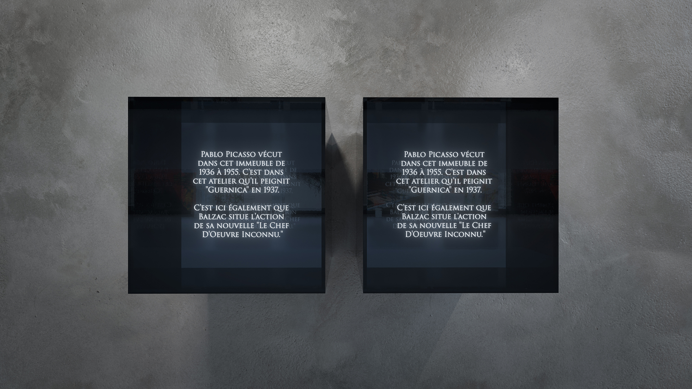
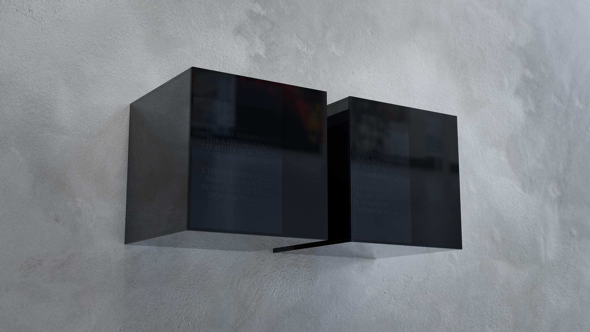
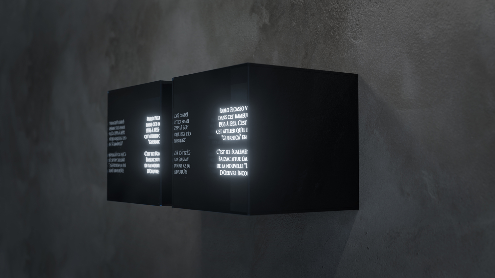

Double (December 1612)
Mixed-media wall-mounted sculpture.
Double (December 1612) consists of two identical, wall-mounted cubic volumes. At first the forms appear sealed and fully reflective, returning the viewer to themselves. Over time, an internal light intermittently reveals faintly glowing text embedded within the volume, visible only from certain angles and after sustained looking. When the light is on it remains intermittent, never resolving into a stable pattern, and may alternately read as a deliberate feature or slightly malfunctioning. The two forms differ only in a subtle variation in the rhythm of this flicker, a misalignment that is difficult to register but slowly unsettles their superficial sameness. What presents as a monolithic, self-contained pair begins to shift behaviorally, moving between reflection and inscription, flatness and depth, sculptural stillness and electrical twinkle without ever fully resolving.


With the internal light off (top) and on (bottom), revealing the engraved text.

